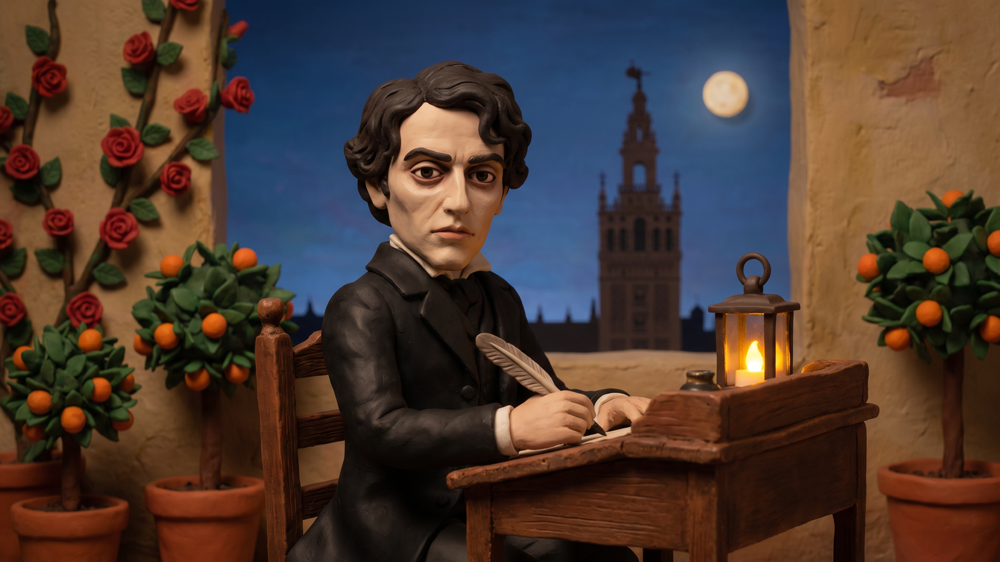
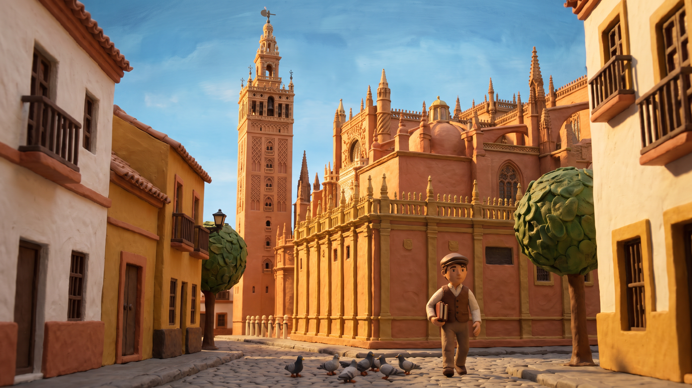
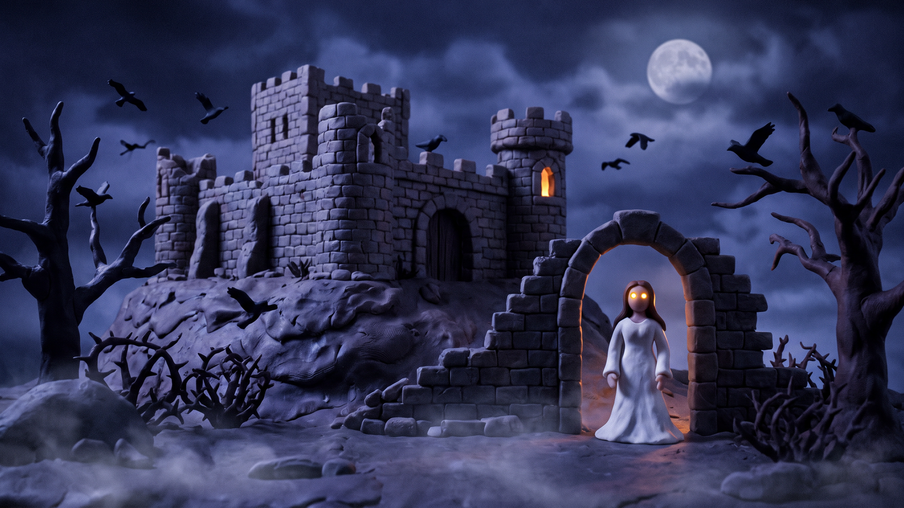
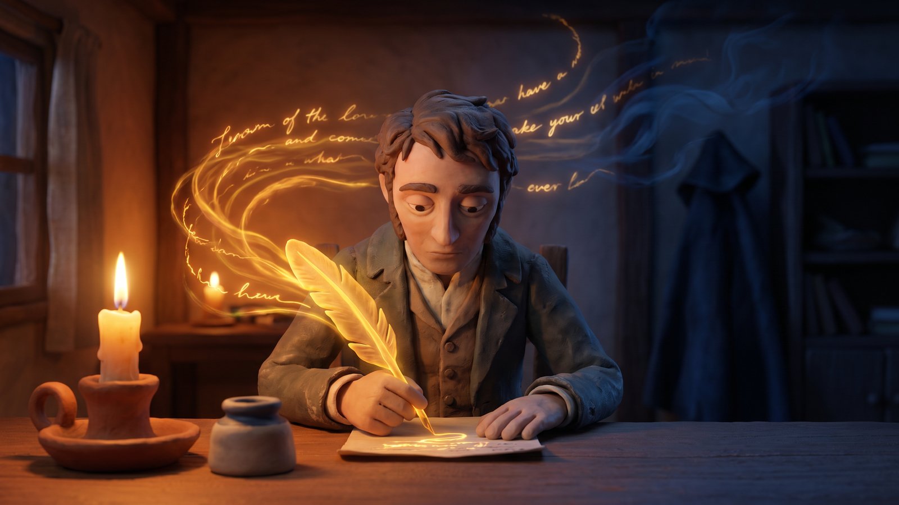
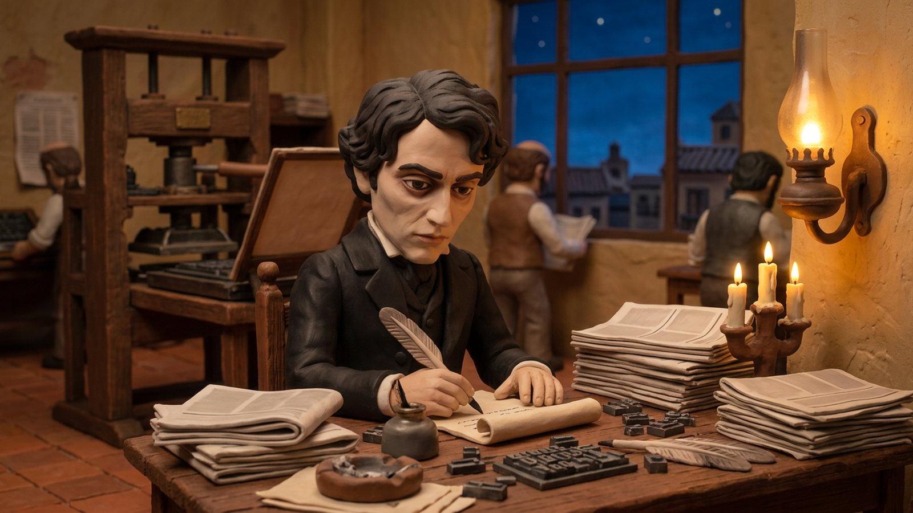
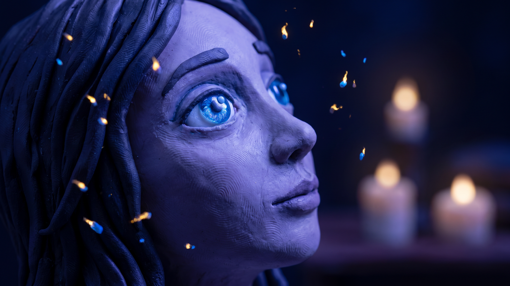
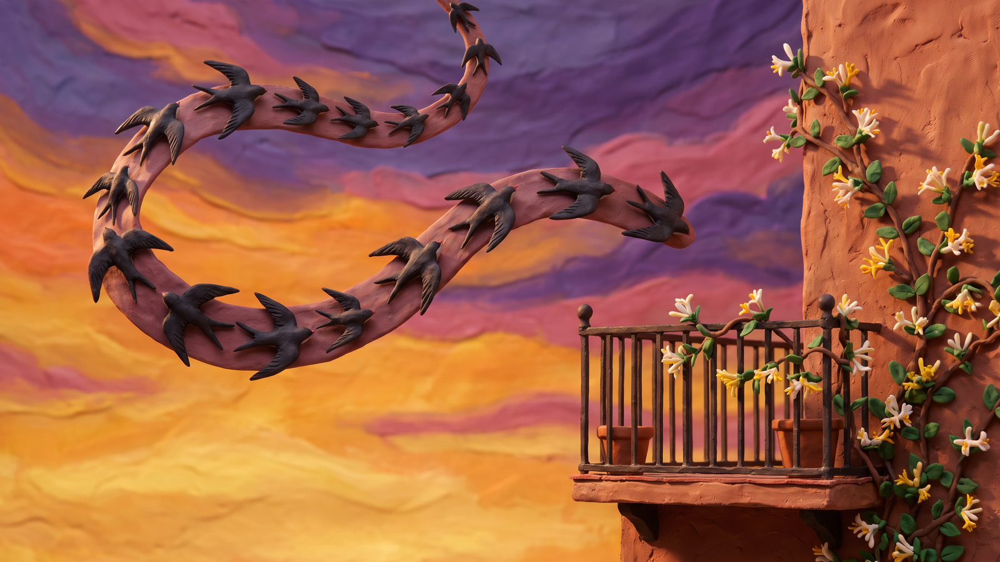
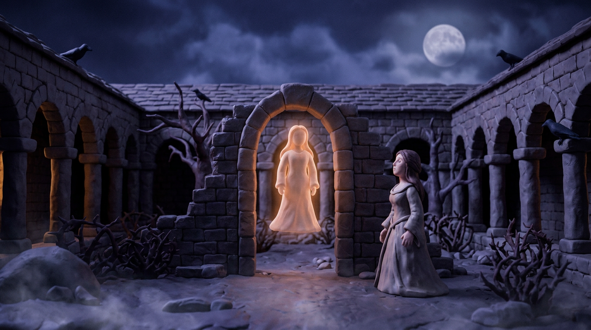
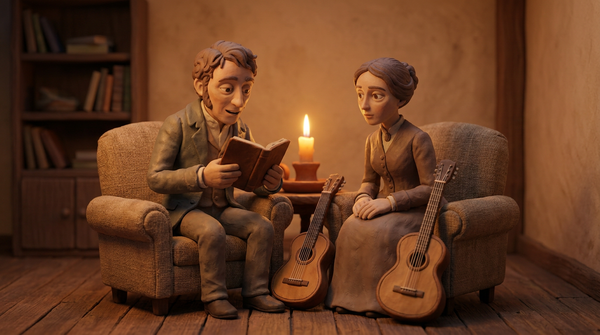

1. ¿Dónde nació Gustavo Adolfo Bécquer?
| A En Veruela | B En Madrid |
| C En Toledo | D En Sevilla |


Gustavo Adolfo Domínguez Bastida, más conocido con el apellido Bécquer, nace en Sevilla en 1836.[1] Hijo y hermano de importantes pintores costumbristas, se queda huérfano a los diez años y vive su infancia y su adolescencia en Sevilla, donde estudia humanidades y pintura.
En 1854 se traslada a Madrid para hacer carrera literaria.[1] Sin embargo, no tiene éxito; su proyecto de escribir una Historia de los templos de España es un rotundo fracaso y para vivir se dedica al periodismo.
En 1858 contrae una enfermedad, probablemente tuberculosis, y durante la convalecencia publica su primera leyenda, El caudillo de las manos rojas. En 1861 se casa con Casta Esteban, pero el matrimonio nunca es feliz.
Entre 1861 y 1865 compone la mayor parte de sus Leyendas y redacta las Cartas literarias a una mujer, donde expone sus teorías sobre la poesía y el amor.
La temporada que pasa en el monasterio de Veruela por razones de salud (en 1864) le inspira las delicadas Cartas desde mi celda, en las que destaca el tema de la naturaleza.
En 1866 obtiene el empleo de censor oficial de novelas, lo que le da la seguridad económica para concentrarse en sus Leyendas y sus Rimas. Sin embargo, con la revolución de 1868 pierde todo su trabajo y su esposa lo abandona ese mismo año.
Se traslada entonces a Toledo con su hermano Valeriano, y allí acaba de reconstruir el manuscrito de las Rimas. El fallecimiento de su hermano en septiembre de 1870 le produce una gran depresión, y muere tres meses después sin reconocimiento alguno de su obra.
| NOMBRE | Gustavo Adolfo Domínguez Bastida, conocido como Bécquer |
|---|---|
| NACIMIENTO | Sevilla, 1836 · familia de pintores costumbristas |
| MUERTE | Madrid, 1870, pocos meses después de la muerte de su hermano Valeriano |
| VIDA | huérfano a los diez años · Madrid en 1854 · periodismo · tuberculosis en 1858 · boda con Casta Esteban en 1861 · Veruela en 1864 · censor oficial de novelas en 1866 · revolución de 1868 |

Gustavo Adolfo Bécquer es un romántico tardío, ya que empieza su trayectoria literaria cuando ya se consolida en Europa la corriente realista-naturalista.
No obstante, está considerado el poeta romántico más importante del panorama español, capaz de influenciar a los autores que le sucedieron. Escribe artículos, cartas literarias y obras teatrales.
Sin embargo, su producción más destacada está constituida por las Rimas y Leyendas. Las Rimas son unas composiciones poéticas muy breves y sencillas, de tono intimista. Sus temas son esencialmente la poesía y el amor en sus distintas vertientes.
Las Leyendas constan de dieciocho relatos tradicionales españoles, todos ellos con un marcado carácter gótico y misterioso.
En ellas destacan temas típicamente románticos como el interés por la Edad Media, los aspectos sobrenaturales e irracionales del ser humano, la importancia de los sentimientos y el gusto por lo lúgubre.
| ROMÁNTICO TARDÍO | empieza a escribir cuando ya se consolida el realismo-naturalismo |
|---|---|
| PRODUCCIÓN | artículos, cartas literarias y obras teatrales |
| OBRAS CLAVE | las Rimas (poesías breves, intimistas) y las Leyendas (18 relatos góticos y misteriosos) |
| TEMAS DE LAS LEYENDAS | Edad Media, lo sobrenatural, lo irracional, los sentimientos, lo lúgubre |
En su breve vida Bécquer publica algunas de sus Rimas en diferentes revistas, hasta que en 1867 las recoge en un manuscrito que entrega a su protector, el ministro de la Gobernación González Bravo.
Sin embargo, al estallar la revolución de septiembre de 1868, el palacio del ministro es saqueado y el manuscrito se pierde. Bécquer trata de reproducirlo de memoria en el Libro de los gorriones, pero no llega a publicarlo en vida.
Por eso, en 1871, a los pocos meses de su muerte, sus amigos organizaron una suscripción pública para editar el texto, que en poco tiempo se convirtió en la obra lírica más relevante del Romanticismo español.
| PUBLICACIÓN | Bécquer publica algunas Rimas en revistas desde 1858 |
|---|---|
| 1867 | entrega el manuscrito a González Bravo |
| 1868 | el manuscrito se pierde durante el saqueo del palacio del ministro |
| DESPUÉS | Bécquer lo reconstruye de memoria en el Libro de los gorriones |
| 1871 | los amigos publican las Rimas: la obra lírica más relevante del Romanticismo español |
El libro se compone de 79 poesías de las que se desconoce la fecha exacta de realización. Están divididas en cuatro bloques, según el orden establecido por los amigos del autor.
| BLOQUE | RIMAS | TEMA |
|---|---|---|
| I bloque | 1-11 | Reflexión sobre la poesía. Se celebra la inspiración poética y la fuerza creadora del genio humano. |
| II bloque | 12-29 | Exaltación amorosa. El amor se une a la esperanza y la contemplación de la belleza femenina es el tema central. |
| III bloque | 30-51 | Desengaño. Predominan la desilusión y la melancolía frente al amor. La mujer ideal choca contra la mujer real. |
| IV bloque | 52-79 | Muerte. Sentimiento de angustia que se proyecta sobre la vida y lleva a lúgubres reflexiones sobre la muerte. |
Resumiendo, en las Rimas Bécquer explora su propio ánimo de poeta y se centra básicamente en el amor como fundamento de la vida, desde el presentimiento de la felicidad amorosa hasta el desengaño, que supone un fracaso vital.
La conclusión final es que la plenitud pertenece al pasado y solo se puede alcanzar en los recuerdos y los sueños.
| EL LIBRO | 79 poesías de fecha desconocida, divididas en cuatro bloques |
|---|---|
| I · RIMAS I-XI | reflexión sobre la poesía, la inspiración y la fuerza creadora |
| II · RIMAS XII-XXIX | exaltación amorosa y belleza femenina |
| III · RIMAS XXX-LI | desengaño, desilusión y melancolía |
| IV · RIMAS LII-LXXIX | muerte y angustia vital |
| IDEA FINAL | la plenitud pertenece al pasado: solo se alcanza en recuerdos y sueños |

Bécquer utiliza metros variados, que toma tanto de la tradición culta (versos de 10, 11 o 12 sílabas) como de la popular (el octosílabo).
Su metro preferido, sin embargo, es el que mezcla endecasílabos con heptasílabos, logrando así un verso quebrado, hasta trémulo (en las palabras del poeta Dámaso Alonso), que expresa la fragilidad de los sentimientos.[2]
Su estilo se inspira en la poesía alemana contemporánea, de la que toma el gusto por las sugerencias, la brevedad y la musicalidad.
En la construcción destacan por un lado los paralelismos y, por otro, las antítesis o las fórmulas adversativas, que subrayan la contradicción característica de las Rimas: yo vs tú, inspiración vs razón, luz vs oscuridad, etc.
Los finales de las composiciones están cargados de emoción. Pueden estar constituidos por una exclamación, una frase breve, una explicación de los conceptos expresados o una frase sentenciosa; siempre con el propósito de transmitir el sentimiento del poema.
En las Rimas aparecen a menudo figuras de repetición sintáctica, como las anáforas y los hipérbatos, con frecuentes anticipaciones de adjetivos para alcanzar un efecto emocional.
Es importante también la variedad de la entonación, con abundante uso de frases exclamativas e interrogativas.
Un lugar destacado lo ocupa la representación de experiencias sensoriales (sonido, vista, tacto); en particular, sobresalen las imágenes relacionadas con la luz.
Bécquer supera el estilo retórico de los primeros románticos, decantándose por un lenguaje sencillo y cercano a la sensibilidad del lector.
Esta característica lo ha convertido en fuente de inspiración de grandes poetas del siglo XX, como Juan Ramón Jiménez o Antonio Machado.[2]
| MÉTRICA | metros variados: tradición culta (10, 11, 12 sílabas) y popular (octosílabo) |
|---|---|
| METRO PREFERIDO | mezcla de endecasílabos con heptasílabos: el verso quebrado, hasta trémulo (Dámaso Alonso) |
| ESTILO | sugerencias, brevedad y musicalidad de la poesía alemana contemporánea |
| FIGURAS | paralelismos, antítesis y fórmulas adversativas: yo vs tú, inspiración vs razón, luz vs oscuridad |
| RECURSOS | anáforas, hipérbatos, exclamaciones e interrogaciones, imágenes sensoriales de la luz |
| LENGUAJE | sencillo y cercano: fuente de inspiración de Juan Ramón Jiménez y Antonio Machado |

Vamos a hacer un quiz interactivo sobre Gustavo Adolfo Bécquer desde el móvil o el ordenador. Abrid la página de Bécquer en el blog del profesor. El docente os dará un código de 4 cifras para entrar: escribid vuestro nombre, el código y pulsad unirse a la clase.
Durante el quiz aparecerán preguntas con 4 opciones cada una: elegid la respuesta correcta y haced clic, pero no podréis cambiarla después. Solo hay una respuesta correcta. Después de cada pregunta, el profesor os mostrará los resultados.
1. ¿Dónde nació Gustavo Adolfo Bécquer?
| A En Veruela | B En Madrid |
| C En Toledo | D En Sevilla |
2. ¿Qué empleo obtuvo Bécquer en 1866 que le proporcionó estabilidad económica?
| A Periodista en un diario madrileño | B Ministro de la Gobernación |
| C Censor oficial de novelas | D Pintor de la corte |
3. ¿Por qué se considera a Bécquer un romántico tardío?
| A Porque empezó su trayectoria cuando ya se consolidaba el realismo-naturalismo | B Porque sus obras se publicaron varios años después de su muerte |
| C Porque escribió sus obras más importantes al final de su vida | D Porque fue el último poeta romántico español en publicar |
4. ¿Cuáles son las dos producciones más destacadas de Bécquer?
| A La Historia de los templos y El caudillo de las manos rojas | B Los artículos periodísticos y las Cartas desde mi celda |
| C Las Cartas literarias y las obras teatrales | D Las Rimas y las Leyendas |
5. ¿Qué ocurrió con el manuscrito original de las Rimas que Bécquer entregó a González Bravo en 1867?
| A Se perdió durante el saqueo del palacio del ministro en la revolución de 1868 | B Fue destruido accidentalmente por el propio Bécquer |
| C Bécquer lo perdió durante un viaje a Toledo | D Se publicó íntegramente en vida del autor |
6. ¿En cuántos bloques temáticos se dividen las 79 poesías de las Rimas?
| A En cuatro bloques | B En tres bloques |
| C En dos bloques | D En un bloque |
7. ¿Cuál es el tema central del primer bloque (Rimas I-XI)?
| A La reflexión sobre la poesía y la inspiración poética | B La exaltación amorosa y la belleza femenina |
| C El desengaño y la melancolía | D La muerte y la angustia vital |
8. ¿Cuál es el metro preferido de Bécquer en sus Rimas?
| A La mezcla de endecasílabos con heptasílabos | B Los versos de 10 sílabas de tradición culta |
| C El octosílabo de tradición popular | D Los versos de 12 sílabas |
9. ¿En qué tradición poética se inspiró Bécquer para su estilo?
| A En la poesía italiana del Renacimiento | B En la poesía alemana contemporánea |
| C En la poesía francesa contemporánea | D En la poesía árabe andalusí |
10. ¿Cómo describió Dámaso Alonso el verso becqueriano?
| A Quebrado, hasta trémulo | B Rotundo y grandioso |
| C Grave y solemne | D Ágil y vibrante |

Para trabajar con la Rima XXI de Bécquer, lee primero los textos de abajo y abre la aplicación del esquema interactivo con la tableta o el ordenador. El docente te dará un código de 4 cifras: escríbelo junto con tu nombre y apellidos y pincha unirse a la clase.
Dentro de allí verás el esquema dividido en las fases del método de Fernando Lázaro Carreter: lectura y localización, tema, estructura, análisis de la forma, redacción y conclusión. En cada fase elige la palabra clave correcta del menú desplegable.
Las doce palabras disponibles son: anáfora, apóstrofe, diálogo, endecasílabos, sencillez, rimas, poesía, romanticismo, relación, identificación, persona amada y heptasílabo. Al completar el esquema, solo pincha envía para mandarlo al docente.
No podrás cambiarlo después. Por último, copia el esquema corregido en tu cuaderno.
El poema que analizamos es la Rima XXI de Gustavo Adolfo Bécquer, poeta del Romanticismo español nacido en Sevilla en 1836 y fallecido en Madrid en 1870.
Se trata de un texto completo que pertenece al género lírico y forma parte de las Rimas, una colección de 79 poemas publicada en 1871. Este poema en concreto pertenece al primer grupo de rimas, que reflexionan sobre la naturaleza de la poesía y la inspiración poética.
Bécquer escribe en la segunda mitad del siglo XIX, cuando el Romanticismo exagerado de la primera parte del siglo ya ha pasado, y su poesía es más íntima, más personal y más sencilla, pero también muy profunda.
El tema central del poema es la identificación de la poesía con la persona amada: Bécquer afirma que la poesía no es un concepto abstracto, sino que es la mujer a la que él se dirige.
El poema tiene tres versos endecasílabos y un último verso heptasílabo, con rima asonante. La estructura se divide en dos partes: los primeros tres versos plantean una pregunta y el último verso da la respuesta.
Esta forma de diálogo hace que la conclusión sea más directa y emotiva. El lenguaje es muy sencillo: Bécquer usa palabras comunes como pupila y azul, sin cultismos, lo que da al poema un tono natural y cercano.
La repetición de «¿Qué es poesía?» al inicio de los versos 1 y 3 crea insistencia, mientras que el último verso pone todo el énfasis en la palabra tú.
Las figuras retóricas son la anáfora, la identificación de la poesía con la persona amada y el apóstrofe, que es cuando el poeta habla directamente a otra persona. Todas estas figuras ayudan a transmitir el tema de forma clara y emotiva.
En conclusión, la forma y el contenido están perfectamente unidos: la sencillez del lenguaje refleja que la poesía es algo natural y cercano,
la estructura de diálogo muestra que la poesía nace de la relación entre dos personas, y el verso final más corto da fuerza a la afirmación principal de que la poesía es la persona amada.
Cada elemento formal, desde las palabras hasta el ritmo, sirve para expresar el tema central.
| GÉNERO | texto lírico completo, parte de las Rimas (1871) |
|---|---|
| GRUPO | primer grupo: reflexión sobre la poesía y la inspiración |
| TEMA | la identificación de la poesía con la persona amada |
| FORMA | tres versos endecasílabos y un heptasílabo final, rima asonante |
| ESTRUCTURA | pregunta (vv. 1-3) y respuesta (v. 4): diálogo directo y emotivo |
| FIGURAS | anáfora de «¿Qué es poesía?», identificación y apóstrofe |

Esta actividad os permitirá explorar el arte poético de Gustavo Adolfo Bécquer a través de la realidad aumentada. Trabajaréis en grupos para crear una composición visual que exprese el sentido del poema en un espacio real.
A continuación, encontraréis todos los pasos necesarios para completar la actividad.
PASO 1 Usad tabletas u otros dispositivos móviles para escanear el código QR que tenéis aquí abajo. Se abrirá el poema de Bécquer en tres dimensiones.
PASO 2 LEED EL POEMA CON ATENCIÓN. Antes de activar la realidad aumentada, leed la poesía en 3D que aparece en la pantalla inicial y que podéis ampliar para leerla mejor.
Esto sirve para reflexionar sobre su sentido, las emociones que transmite y las imágenes que evoca. Esta lectura os ayudará a elegir el lugar más adecuado para colocar el poema.
PASO 3 ACTIVAD LA REALIDAD AUMENTADA. Pulsad el botón «Tap here to place in your space».
Apuntad vuestro dispositivo móvil hacia el suelo y esperad unos segundos: el poema aparecerá flotando en el espacio a vuestro alrededor, como si estuviera escrito en el aire.
PASO 4 ENCONTRAD UNA LOCALIZACIÓN. Buscad un lugar significativo dentro del aula o en el patio del instituto. El espacio debe ayudar a expresar las ideas y emociones del poema.
Pensad: ¿qué rincón, qué pared dialoga mejor con los versos de Gustavo Adolfo Bécquer?
PASO 5 HACED UNA CAPTURA DE PANTALLA. Situad el poema en el lugar elegido y haced allí una captura de pantalla. Si queréis, podéis hacer hasta tres capturas eligiendo los encuadres que mejor representen vuestro trabajo.
Cada imagen debe ayudar a comprender y sentir mejor la poesía. Subid las capturas a la aplicación en el apartado Elaborado visual.
PASO 6 ESCRIBID LA EXPLICACIÓN. Redactad un texto en el que expliquéis: por qué elegisteis ese lugar concreto, qué relación existe entre el espacio y el poema y, finalmente, qué efecto queríais conseguir con vuestra captura de pantalla.
Escribid esta explicación en el apartado Explicación de la imagen.
PASO 7 GRABAD LA LECTURA EN ESPAÑOL. Grabad un archivo de audio con vuestra lectura del poema. Todos los integrantes debéis participar en la lectura expresiva. Repartíos las estrofas y cuidad la pronunciación y la entonación.
Cuando terminéis, subid el archivo en el apartado Lectura en español.
PASO 8 GRABAD LA EXPLICACIÓN ORAL. Grabad un segundo archivo de audio en el que expliquéis oralmente vuestras capturas de pantalla. Todos los integrantes debéis leer al menos una frase de la explicación.
Subid esta grabación en el apartado Explicación en audio de las razones de la foto.

Vuelve a leer el poema de Bécquer Volverán las oscuras golondrinas y, a continuación, escribe en tu cuaderno el análisis textual del poema según el método de Fernando Lázaro Carreter. El texto debe tener una extensión aproximada de 300 palabras.
Antes de escribir tu texto, vuelve a leer el análisis textual de la actividad 2.



[1] Biblioteca Virtual Miguel de Cervantes. Biografía de Gustavo Adolfo Bécquer.
[2] Cadelli, E. – Salvaggio, M. – Bruni, P. – Caballero Sánchez, P. – Vargas Vergara, M. Horizontes. Paisajes literarios y raíces culturales del mundo hispano, Milano: Europass, p. 222-223.